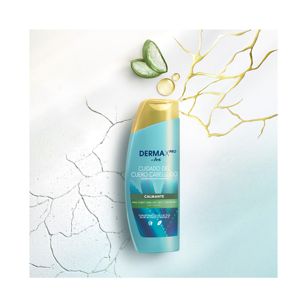
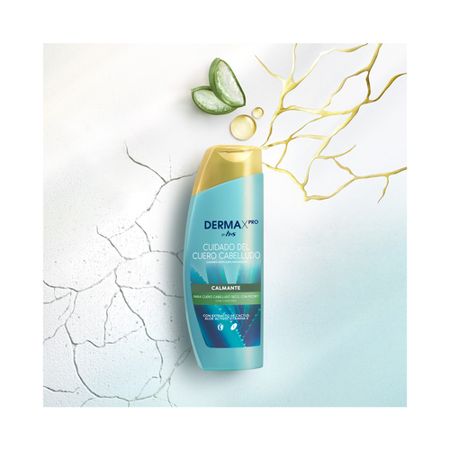
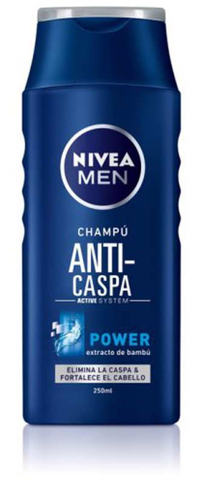
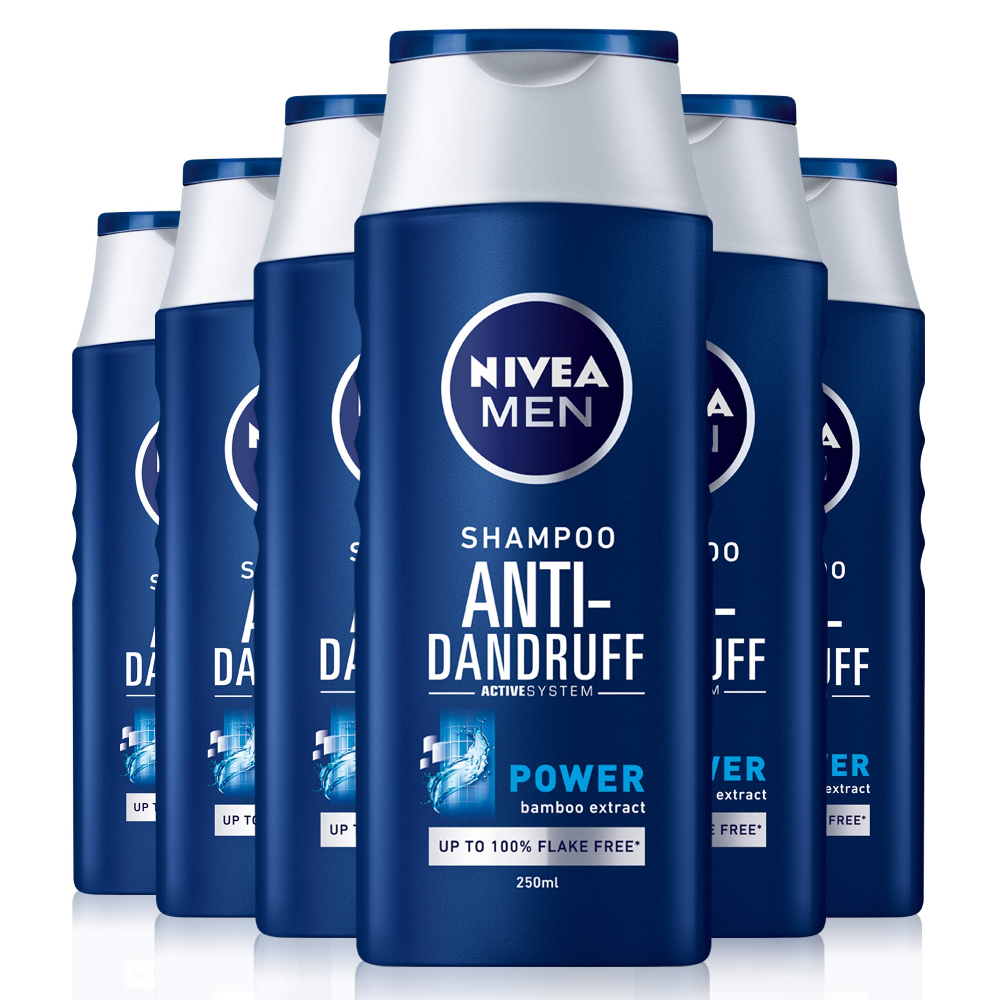
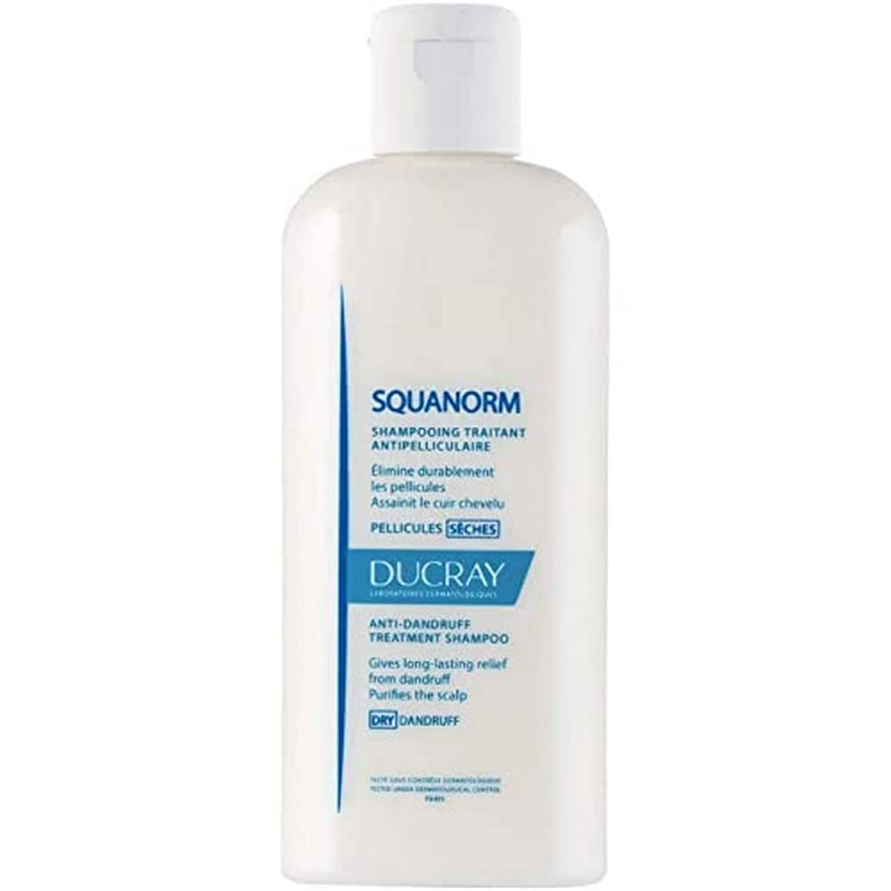
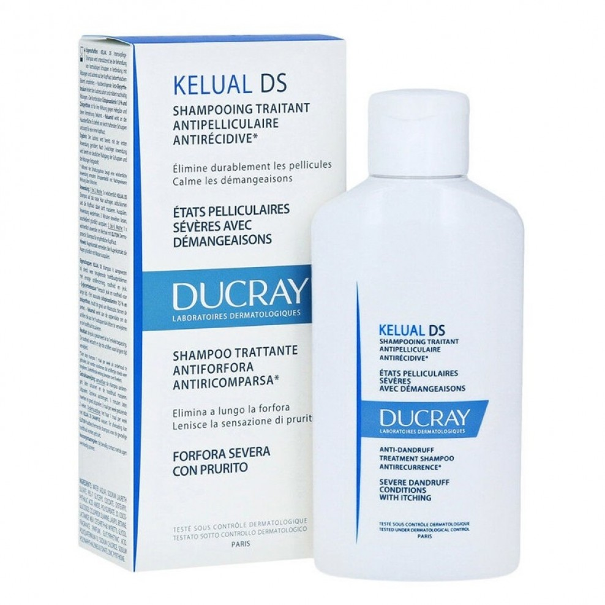

Este champú de 300 ml es un producto especial de H&S, el DERMAXPRO CHAMPÚ ANTICASPA CALMANTE es un champú anticaspa e hidrante que no dañó ningún tipo de piel.Ayuda a reforzar la barrera natural de la piel y restablece el equilibrio natural del cuero cabelludo.
Alivia el cuero cabelludo para ayudar a prevenir la sequedad, el picor y la caspa,hecho con un compuesto con un ingrediente activo clínicamente probado: la piroctona olamina Contiene ingredientes para el cuidado de la piel: aloe activo, vitamina E y extracto de cactus que ha sido desarrollado por expertos y dermatológicamente testado
El bote de este champú está fabricado con un 40 % de plástico reciclado, excluyendo el tapón ayudando también a hacer otros productos y no dañar el medio ambiente
El precio de mercado es de tan solo 28.75€
 
Este champú te da el control de la caspa, NIVEA MEN Power Champú Anti-Caspa con su fórmula con Active Power System se dirige a la causa directa de la caspa y elimina con eficacia todos los residuos del cabello y del cuero cabelludo. Desarrollado para hombres con cabello normal, su fórmula está enriquecida con extracto de bambú para fortalecer el cabello desde la raíz, reponiendo el equilibrio natural de la piel del cuero cabelludo y eliminando el 100% de los efectos visibles de la caspa.
Elimina el 100% los efectos visibles de la caspa, y previene su reaparición con el uso regular,su fórmula con Active Power System limpia eficazmente cabello y cuero cabelludo,repone el equilibrio natural de la piel del cuero cabelludo,eficaz desde el primer uso.
Este producto de alta calidad además de hidratar es un tensioactivo ideal para el cuidado del cabello y el pelo queda limpio, libre de caspa, con buen olor y suave.
Su precio en el mercado es de 21.70€
 El champú reequilibrante ELUCION es adecuado para un uso diario en alternancia o como seguimiento de un tratamiento anticaspa.Su fórmula calmante e hidratante con PIROCTONA OLAMINA, GLICINA y vitamina B5, prolonga la eficacia de los cuidados capilares anticaspa y limita las recidivas de la caspa, un champú anticaspa suave que proporciona brillo, ligereza y suavidad al cabello y respeta el cabello teñido.
ELUTION Champú reequilibrante alguna de las ventajas frente a otros productos del mercado es que limita la reaparición de la caspa tras los tratamientos anticaspa.
Mantiene el equilibrio del microbioma del cuero cabelludo,limita las recurrencias de la caspa gracias a su uso como mantenimiento y respuesta la colaboración de cabello. Puede ser utilizado tanto para adultos como para jóvenes y es apto para todos los tipos de caspa,cuero cabelludo con caspa grasa y cuero cabelludo con caspa grasa seca.
El precio del mercado se encuentra en 12.99€
 